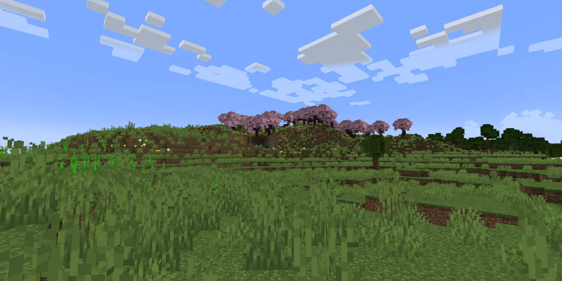

ゲーム紹介
冒険
マインクラフトの世界では、様々な「バイオーム」を冒険できます。「バイオーム」とは、様々な地形や気候の特色が感じられるエリアのことです。80種類ほどのバイオームが存在し、バイオーム特有のアイテムを集めたり、敵と戦ったりできることが魅力です。他にも、「ピラミッド」や「村」などの人工建造物などを見つけたり、犬や猫、オウムなどの動物を仲間にして一緒に冒険できる楽しみもあります。
by Mattun
採掘
マインクラフトの世界における採掘とは、鉄や金、ダイヤなどの鉱石をツルハシなどで掘ることです。そして掘った鉱石で装備や道具をアップグレードすることができます。より貴重な鉱石で作った道具を使うほど、道具が痛まず、早く掘れます。 斧、ツルハシ、シャベルなどの道具を作る素材には、木、石、金、鉄、ダイヤモンド、ネザライトがあります。他にも、石炭、エメラルド、ラピスラズリ、レッドストーンなどの鉱石がありますが、これらは道具を作るのには使えません。石炭は、燃料に使います。 エメラルドは、村人との交換にしか使いません。ラピスラズリは、エンチャントに使ったり、染料に使ったりします。なので、ゴミでは、ありません。なので、絶対に捨ててはいけません。
by Mattun
戦闘
マインクラフトの世界には、様々なモブ（敵）が存在し、戦うことができます。武器の種類は、剣、斧、弓、クロスボウ、トライデント、メイス、盾などたくさんあります。戦闘で楽しいことも、たくさんあります。一つ目は、「エンチャント」ということができ、エンチャントをすると、例えば「ダメージ増加」で攻撃力を上げられたり、「火属性」で敵に火をつけたりすることもでき、他にもたくさんあります。「エンチャント」は、戦闘だけじゃなく、ツルハシや、防具にも、ツールにはほとんど使えて便利です。
by Mattun
建築
採掘や戦闘で集めた様々な素材のブロックで、建造物を建築することができます。家をつくって敵の襲撃から身を守ったり、大切なものを保管したりします。他にも装置を作って作業をより効率化できます。クリエイティブモードでは無限にアイテムを出せるので、お城やモダンハウス、お寺などの和風建築を建築して楽しむ遊び方もあります
by Mattun